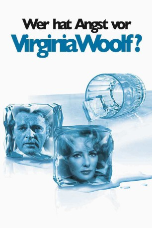

#4154 Wer hat Angst vor Virginia Woolf?
Alternativ: Who's Afraid of Virginia Woolf?
Auszeichnungen: 5 Oscars gewonnen für 8 Oscars nominiert 3 BAFTA-Awards gewonnen
 
 IMDB-Wertung: 8.1 / 10
IMDB-Wertung: 8.1 / 10  Metascore: 0
Metascore: 0 
Mike Nichols verfilmte Edward Albees Drama zu einer Zeit als das Kino dazu über ging auch ernsthaftere Themen zu behandeln. Elizabeth Taylor und Richard Burton brillierten in ihren Rollen zweier emotionsgeladener Eheleute, die vor einem jüngeren Ehepaar ihren Konflikt austragen und dabei sämtliche gesellschaftliche Konventionen überschreiten.
Jahr: 1966
Dauer: 130 Minuten
FSK: 18
Land: USA Studio: Warner Bros.Tonspuren:
Untertitel:
Auflösung: 1080p (1920x1080) Größe: 10117 MB
Genre: Drama
Regisseur: Mike Nichols
Drehbuch: Darren Aronofsky
Soundtrack:
Darsteller:
Datei: X:\1966\Wer hat Angst vor Virginia Woolf (1966, FSK18, 1920x1080).mkv seit 27.07.2016
Festplatte: HD 1900-1970
 Es gibt insgesamt 27 Filme in der Gruppe '1966'
Es gibt insgesamt 27 Filme in der Gruppe '1966'